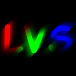
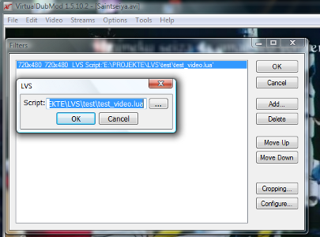
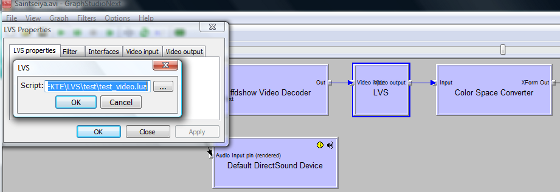

Definition
"LVS"
LVS (Lua Video Sync) is a video frameserver plugin to edit video frames with the capability of
scripting language Lua + 2D image processing functionality.
Purpose
LVS allows linear video frame editing by writing scripts. This gives users more control than a function-limited GUI and encourages creativity.
Plugin interfaces
Plugin interfaces for frameserver application Avisynth and DirectShow
and video editor VirtualDub are available.
Workflow
- Load LVS.dll into your application.
- Configure LVS to load a .lua script for frame editing.
- Write the script (see 2.).
- Play or encode the resulting video.
Usage
Avisynth
LoadPlugin("E:\PROJEKTE\LVS\release\LVS.dll")
BlankClip()
LVS(video = "test_video.lua", audio = "test_audio.lua")
VirtualDub

DirectShow

Getting started
A script creation begins with defining the required callback function for streaming data.
For frame editing, the callback function is GetFrame(frame, frame_i).
frame is an image object (see g2d image), containing a reference to the current frame data.
frame_i is the current frame number.
For audio editing, the callback function is GetSamples(samples, samples_n, start_sample_i).
samples is a numbers table, containing a reference to samples of all channels of current time.
samples_n is the table size of last argument.
start_sample_i is the global sample index (for all channels) of the first gotten sample.
See into the examples folder for commented scripts. This, in combination with reading the references, is the best way to learn.
References